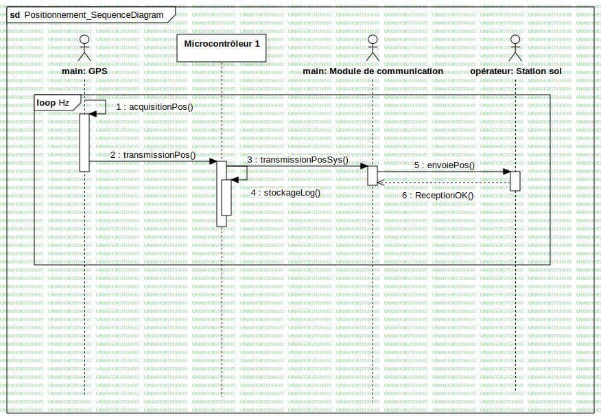

Fonction : Positionnement
UMLInteraction
SystemeBord_Aerostat
::
ArchitectureLogiciel_SystemeBord
::
Fonction : Positionnement
::
Fonction : Positionnement
Description
none
Diagrams

Positionnement_SequenceDiagram
Fragments
Hz
Participants
main: GPS
main: Module de communication
Microcontrôleur 1
opérateur: Station sol
Messages
acquisitionPos() (main→main)
transmissionPos() (main→Microcontrôleur 1)
stockageLog() (Microcontrôleur 1→Microcontrôleur 1)
transmissionPosSys() (Microcontrôleur 1→main)
envoiePos() (main→opérateur)
ReceptionOK() (opérateur→main)
Properties
Name
Value
name
Fonction : Positionnement
stereotype
null
visibility
public
isReentrant
true
Owned Elements
Positionnement_SequenceDiagram